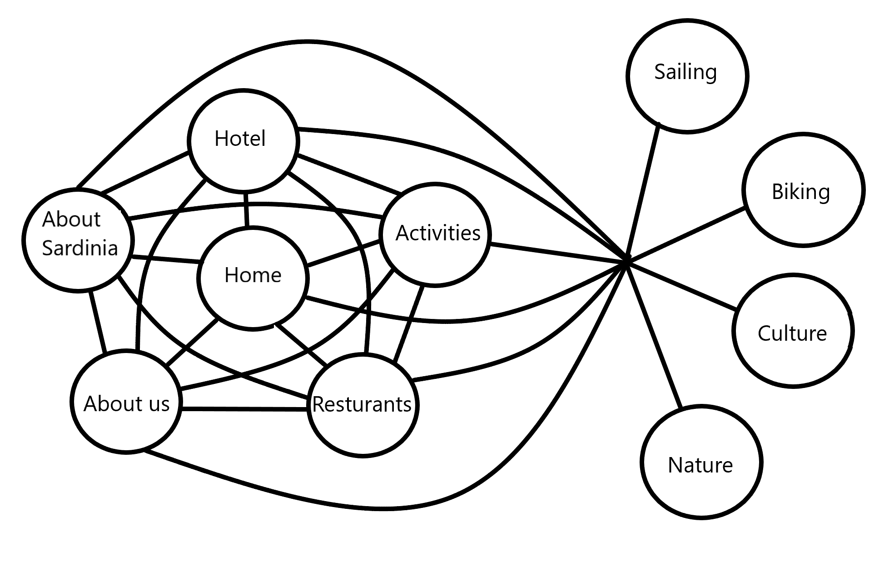
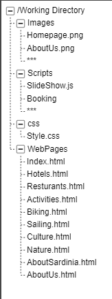

Administative detaljer
Kunde: Visita Sardinia (turistkontor, ikke reell klient).
Kunde: Visita Sardinia (turistkontor, ikke reell klient).
Formidle og gjøre det enkelt for turister og reisende å finne ut hva Sardinia har å tilby. Det skal være enkelt å booke aktiviteter, fremkomstmidler og hoteller.
Brukerne er i hovedsak turister som vil ha informasjon om hva Sardinia kan tilby, i form av aktiviteter og severdigheter. Siden bør gi verdifull informasjon både til personer i planleggingsfasen og turister som allerede er i Sardinia. Forslag til aktiviteter og severdigheter skal være tilpasset alle aldersgrupper.
Navigasjonsstrukturen til denne nettsiden er ganske rett frem. Det skal være mulig å komme til alle de ulike sidene på nettsiden uavhengig av hvilken side man befinner seg på. Når en laster inn hjemmesiden (index) skal det være mulig å komme til alle de andre sidene slik som hotell, aktiviteter og resturanter bare for å nevne noen. Det skal også være mulig å komme fra alle de de ulike sidene tilbake til hjemmesiden eller videre til en annen av sidene. En fullstendig oversikt over alle de ulike sidene og deres tilkobling til hverandre er beskrevet i figur 1 under.
Denne formen for linking skal forekomme i en navigasjonsbar på toppen av nettside vinduet, hvor den også skal følge med nedover på siden når brukeren beveger seg rundt om på siden. Det er kun linkene til «Home», «Hotels», «Resturants», «Activities», «About ardinia» og «About us» (beskrevet i figur 1 på norsk) som er synlige linker til å begynne med. Linkene til «Boat», «Bike», «Culture» og «Nature» skal ikke være synlige til å begynne med, men skal komme frem når man beveger musepekeren over «Activities» taben.
Denne strukturen hvor alle sidene har tilgang til hverandre er valgt over en hierarkisk struktur fordi det skal være lett og oversiktlig å kunne navigere til alle delene av nettsiden uten å måtte gå en designert vei gjennom en nettside for å kunne komme til en annen side. Det blir dermed en mer oversiktlig struktur hvor der skal være vanskeligere å rote seg bort.
Det ble også mer naturlig å plassere «Boat», «Bike», «Culture» og «Nature» som undergrupper av «Activities» i navigasjonsbaren da disse egentlig tilhører den samme undergruppe. Dette er for å ha tilgang til alle delene av nettsiden uten å gjøre navigasjonsbaren alt for uoversiktlig og full av tekst som heller er mer hensiktsmessig å gjemme bort. Dette er også fordi selv om det skal være lett å komme til alle delene av siden gir det en mer oversiktlig løsning om man først blir ledet inn på en nettside som gir en kort og oversiktlig beskrivelse av de ulike aktivitetene som er tilgjengelig.
Font: Roboto og Roboto Slab Roboto Slab er en font med serif, noe som er med på å uttrykke en seriøsitet og profesjonalitet. Denne fonten gjør seg godt til overskrifter og menyer og annen viktig informasjon. Roboto er en fot uten serif, dette gjør at den virker moderne og lett leselig. Derfor har vi valgt å bruke denne til resten av tekstene.
Farger: Hovedfargen er en mørk blågrønn farge som sammen med den nesten hvite fargen under er med på å representere havet, noe som er veldig viktig i forhold til Sardinia. Disse to fargene går igjen på hele siden, og blir en slags rød tråd for designet.
På footeren har vi valgt en mellom-grå farge. Denne er veldig nøytral, noe som er ønsket da footeren ikke skal stikke seg så veldig ut, og passe til på alle sider.
Den litt lysere grå er brukt i vinduet for å sende mail. Denne fargen er også veldig nøytral, og ønsker ikke å ta for mye plass.
Den relativt sterke-gule fargen er brukt til bestillinger, dette gjør at brukeren får tydelig informasjon om at han er i ferd med å gjøre en bestilling, samt tydeliggjøre at dette er en interaktiv del, noe som skjer eller skal gjøres.
Forsiden for nettsiden VisitaSardinia skal inneholde flere, men enkle elementer med lite tekst. Siden skal ha et moderne utsende; rolige pastell farger og et generelt enkelt og upretensiøst design, uten ekstra forfininger (små og unødvendige detaljer). Tanken er å skape en luksuriøs men samtidig god oppfatning av firmaet og dens tilbud, slik at brukeropplevelsen er optimal fra starten av. For å få til dette har vi valgt å begrense innholdet på forsiden, som nevnt tidligere.
Øverst på siden troner firmanavnet VisitaSardinia og logoen i hvitt, på en mørketurkis bakgrunn, etterfulgt av et praktisk og brukervennlig menyoppsett for nettsiden. For bedre synlighet er bakgrunnen til menyen hvit mens bokstavene er turkise. Disse layoutene vil gå gjennom hele nettsiden og vil være som en rød tråd i designet. Når en tar musen over de ulike valgene i menyen vil hver av dem bli understreket for å vise brukeren hva han ser på. Under valget activities vil det derimot komme ut en liten rullegardin med tre ytterlige valg, da på de ulike aktivitetene; fra forsiden kan man komme til rett sted uten å måtte gå inn via flere mellomledd. Denne menyen vil være bevegelig når en scroller ned, og vil holde seg øverst på skjermen selv om man «går forbi den». (sticky header)
Under menyen vil det bli plassert et ganske stort bevegelig bilde av Sardinias kyst/natur som skal møte de besøkende og vekke interesse. Et slik bilde understreker også designet ved å ha flere gjennomgående farger og gir en følelse av kompletthet i designet. Bildet skal også være av rolige farger men som samtidig er av den typen som gir de besøkende lyst til å se videre på hva siden har å by på, altså et vakkert bilde. Under bilde vil det være en spalte av samme turkisfarge som før med hvit tekst. Teksten skal ha overskriften Om oss og er det plassert der for å raskt forklare en usikker besøkende hva firmaet VisitaSardinia driver med og hvem de er. Grunnen bak dette er at firmaet er relativt nytt og det er mange som ikke vet hva firmaet gjør og hva slags type vare de kan tilby.
Ved å scrolle videre ned på siden vil man se Spesielle tilbud. (Merk at disse er ikke synlige når man kommer inn på forsiden, de ligger lenger nede på siden. Det er gjort bevist for å unngå unødvendig info når man kommer inn på siden) Poenget med elementet er å gi flere farger og samtidig muligheter til forsiden. Her vil det være plassert tre ruter. Hvor hver av dem har dedikerte temaer. Et for restaurant, et for hotell og et for aktivitet. Tanken er at det skal bli vist bilder inni rutene med en footer på bilde som forklarer kort hva det er. De skal rullere etter en viss tid, mellom ulike tilbud som firmaet har per dags dato. Dersom man tar musen over et av rutene/bildene så vil footeren bevege seg opp til toppen av bildet samtidig som den drar med seg den turkise fargen over bildet (med 80-90% gjennomsiktighet) og det vil det men hvit tekst stå mer informasjon om det gjeldende tilbudet. Dette er gjort for å unngå at brukeren klikker på noe han ikke vet hva er og må gå fram og tilbake på ulike sider.
Nederst på siden vil det logisk nok være en footer som skal inneholde en del vanlige men viktige ting. Den skal ha hvite bokstaver på denne gangen lysegrå bakgrunn. Fargevalget er laget for å understreke en endring – slutten på forsiden. Innholdet her vil være firmaets kontaktinformasjon, ikoner med link til å Facebook, Twitter, Instagram.
Vi sikter på å tilfredsstille JavaScript-kravene med følgende funksjonalitet:
Definere bruksområde for siden, målgruppe, funksjonelle egenskaper osv. Se innlevering P1.
Bestemme det overordnede designet på sidene og produsere mockups for hver side.
Dette vil gjøre det enklere å produsere de endlige sidene, og gi en god indikasjon
på hvordan vi ønsker at siden skal se ut. Funksjonelle og ikke-funksjonelle
egenskaper på sidene skal defineres, og forskjellige JavaScript's som skal
benyttes må være klart definert.
Frist: 09.10.
Fordele ulike arbeidsoppgaver og roller for prosjektet, slik at vi har
en klar arbeidsfordeling for oppgavene som må gjøres. Dette vil tillate oss å
jobbe induviduelt med oppgavene, før de forskjelligene komponentene
blir kombinert i den endelige siden.
Frist: 09.10.
Etter at arbeidsoppgavene er fordelt vil hver gruppemedlem være ansvarlig
for å gjennomføre oppgavene innen den fastsatte fristen. Hver side eller
script skal først fungere isolert, før alle de induviduelle komponentene
settes sammen til den endelige siden.
Frist 05.11.
Etter at alle de induviduelle sidene er produsert, vil vi sette dem sammen til en fungerende
nettside. Den siste perioden av prosjektet vil gå med til dette, og eventuelle mindre
estetiske eller funkjsonelle tilpassninger blir endret. Alle delmål og arbeidsoppgaver som er
blitt
bestemt skal være gjennomført på dette tidspunktet.
Frist 10.11.
Levering av endelig nettside.
Frist 11.11.
Følgende filstruktur vil bli benyttet under utviklingen av nettsiden. Filene vil være tilgjengelig via GitHub, slik at man enkelt kan jobbe med og pushe endringer i dokumentene.
| Side | Ansvarlig | Frist |
|---|---|---|
| Index.html | Sander | 05.11 |
| Hotels.html | Hans | 05.11 |
| Resturants.html | Simen | 05.11 |
| Activites.html | 05.11 | |
| Biking.html | Sander | 05.11 |
| Sailing.html | Sander | 05.11 |
| Culture.html | Vilde | 05.11 |
| Nature.html | Vilde | 05.11 |
| AboutSardinia.html | Vilde | 05.11 |
| AboutUs.html | Vilde | 05.11 |
| Navn på script | Ansvarlig | Beskrivelse | Input/Output | Frist |
|---|---|---|---|---|
| SlideShow.js | XX | Skriptet skal styre slideshowet på bildene som vises på Home-siden. | Ingen | 05.11 |
| Booking.js | XX | Skal brukes for å reservere hoteller, resturanter, og aktiviteter. | Input: brukerdefinerte datoer. Output: Bekreftelse dersom ledig dato. |
05.11 |
| Booking.js | XX | Skal brukes for å reservere hoteller, resturanter, og aktiviteter. | Input: brukerdefinerte datoer. Output: Bekreftelse dersom ledig dato. |
05.11 |
| Booking.js | XX | Skal brukes for å reservere hoteller, resturanter, og aktiviteter. | Input: brukerdefinerte datoer. Output: Bekreftelse dersom ledig dato. |
05.11 |
| Booking.js | XX | Skal brukes for å reservere hoteller, resturanter, og aktiviteter. | Input: brukerdefinerte datoer. Output: Bekreftelse dersom ledig dato. |
05.11 |
Dette er hva vi trenger av ressurser fra vår klient. Ettersom vi har en fiktiv klient, vil vi forvente å "motta" disse ressursene fortløpende etterhvert som sidene blir utformet.